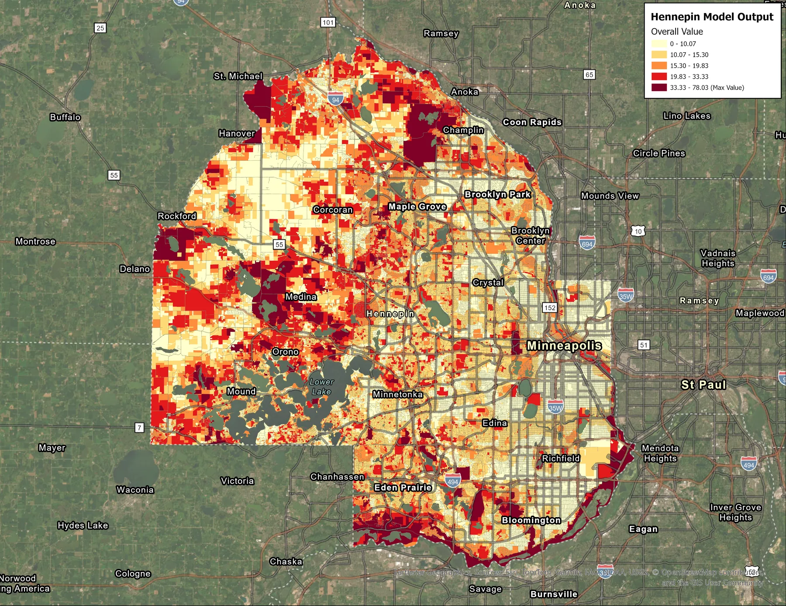

- Lab
- RTGS Lab, GEMS Informatics Center, University of Minnesota
- Advisor
- Dr. Bryan Runck
- Partner
- Natural Resources Partner Coalition (NRPC)
- Dates
- August 2024 – May 2026
Conservation parcel prioritization model
My main research work: a Python suitability model that scores and ranks 400,000+ Hennepin County parcels by conservation value.
I built it in close partnership with the NRPC, a coalition of Hennepin County, Three Rivers Park District, the Minnesota Land Trust, and the University of Minnesota. The NRPC uses it to help cities and local nonprofits maintain healthy, resilient natural systems and focus conservation efforts across the county.
Model criteria and weights
- Spatial context30%Distance to protected areas and natural spaces, potential easements
- Habitat quality and diversity25%Quality rankings from MBS and MLCCS, quality communities, habitat diversity
- Size15%Relative and absolute parcel size
- Wildlife and plant conservation15%Wildlife Action Network, Important Bird Areas, pollinator habitat
- Risk of development10%Development pressure scoring
- Water resources5%Shoreland buffers, floodplains, wetlands, headwaters, groundwater recharge and contamination susceptibility
Built with
- Python: Pandas, GeoPandas, Shapely, NumPy, Matplotlib, Seaborn, SciPy, scikit-learn
- Data: Minnesota Biological Survey, MLCCS land cover, Wildlife Action Network, protected areas, water resource layers
Outcomes
- Ranked 400,000+ parcels for the NRPC's conservation prioritization
- Automated the full multi-criteria workflow in Python
- Validated results with sensitivity analysis and principal component analysis

Supporting work
I also built a command-line ETL pipeline that pulls the model's input datasets from their sources, standardizes them, and loads them into a SQL database.